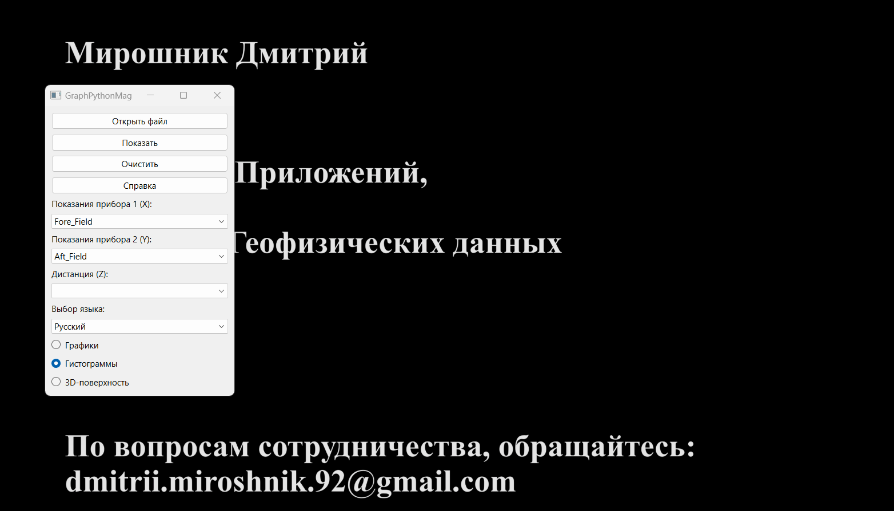
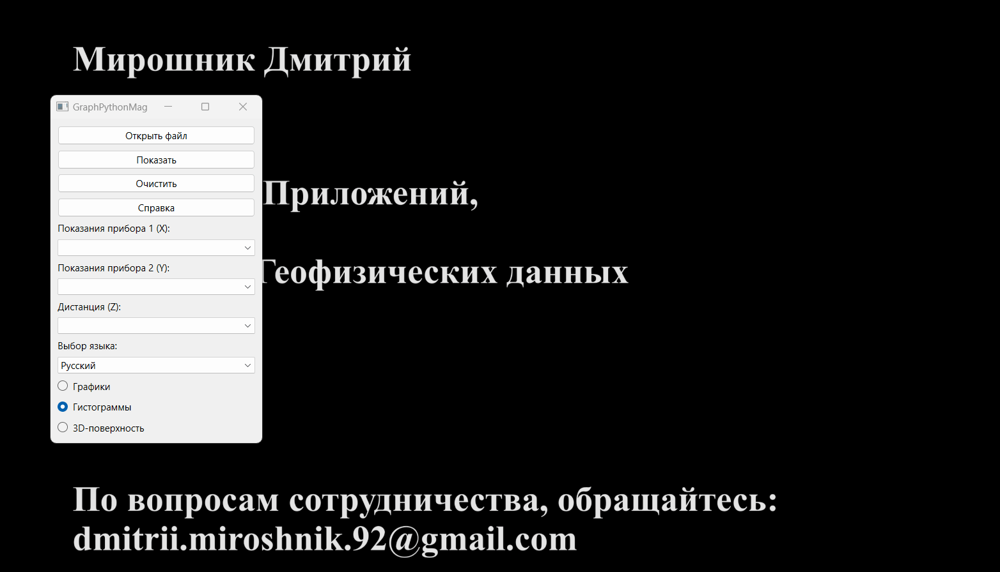
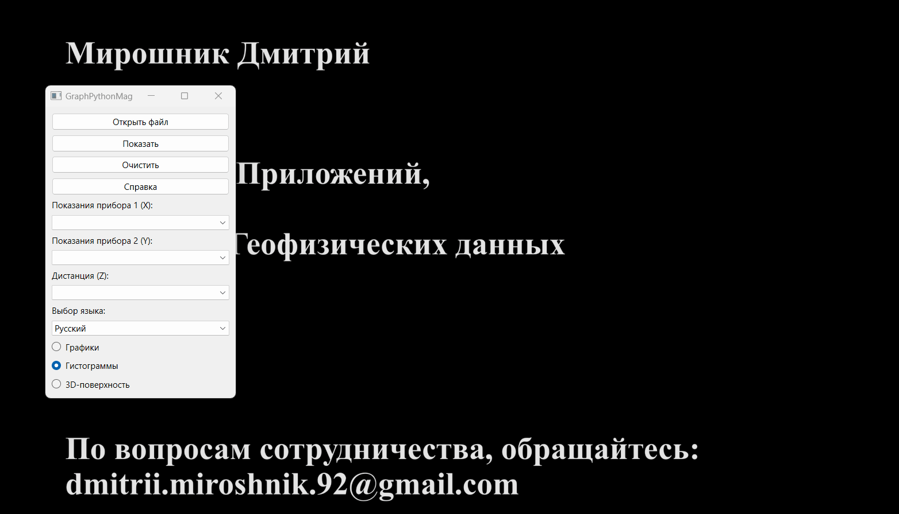
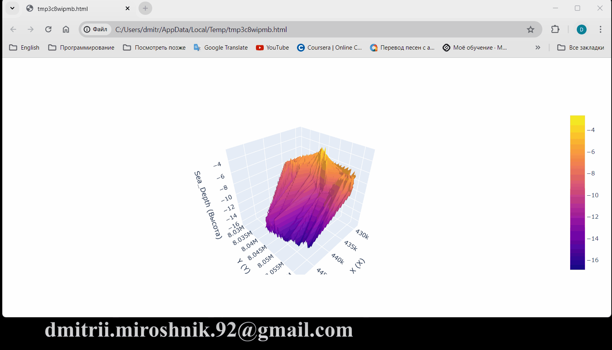

这是一个用于显示各种地球物理数据的应用程序。
它支持生成图表、直方图和 3D 曲面，并具有印刷品质的输出。
输入数据可以是任何以 CSV 格式保存的表格形式的数字数据。


- 要更改界面语言，请在“语言选择”下拉菜单中选择一种可用语言。

 使用科学绘图库 Matplotlib 进行简单图表的生成。
以下是程序中实现的图表类型：
使用科学绘图库 Matplotlib 进行简单图表的生成。
以下是程序中实现的图表类型：
- 简单图表。要生成简单图表，请选择两个列中的任何一个的值："设备1读数" 或 "设备2读数"。

- 组合图表。要比较两个设备的读数，请选择两个列中的值："设备1读数" 和 "设备2读数"。

- 距离相关图表。您还可以根据距离组合不同的图表类型。要实现这一点，请从“距离”下拉菜单中选择距离通道的值。
 使用 Matplotlib 的扩展 Seaborn 来生成正态分布直方图。
以下是程序中实现的正态分布直方图类型：
使用 Matplotlib 的扩展 Seaborn 来生成正态分布直方图。
以下是程序中实现的正态分布直方图类型：
- 简单直方图，与正态分布图形合并。要生成，请选择两个列中的任何一个的值："设备1读数" 或 "设备2读数"。

- 组合直方图。要比较读数，请选择两个列中的值："设备1读数" 和 "设备2读数"。

- 距离相关值分布。您还可以根据距离组合不同的显示选项。要实现这一点，请从“距离”下拉菜单中选择距离通道的值。

科学图形显示窗口 - Matplotlib 允许用户执行各种操作，例如：
- 拖动图表；
- 缩放；
- 显示构建区域；
- 更改轴标签；
- 更改颜色；
- 以所选格式保存图表等。
 使用 Plotly 库生成 3D 曲面。
要生成曲面，请选择所有 3 列：X、Y 和 Z。!!!所有坐标必须在直角坐标系中!!!

3D 曲面显示窗口允许用户执行各种操作，例如：
使用 Plotly 库生成 3D 曲面。
要生成曲面，请选择所有 3 列：X、Y 和 Z。!!!所有坐标必须在直角坐标系中!!!

3D 曲面显示窗口允许用户执行各种操作，例如：
- 拖动；
- 缩放；
- 旋转；
- 读取数据；
- 以所选格式保存图像等。

此应用程序允许使用任何 CSV 文件。但由于该程序是按照 AO "Южморгеология" 的要求创建的，因此，我们将了解如何将 OasisMontaj 数据库导出为 CSV 文件。
在 OasisMontaj 中的操作步骤：
- 数据库 / 导出 / CSV 等...；
- 选择保存参数；
- 点击“确定”。
 GraphPythonMag v 1.2.1
GraphPythonMag v 1.2.1
作者：米罗什尼克·德米特里
如需合作，请联系：dmitrii.miroshnik.92@gmail.com。
您也可以感谢作者。
我很乐意提供支持和反馈！